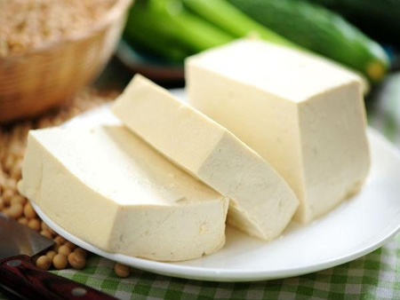

Chào mừng bạn đến với cửa hàng của chúng tôi.
Read More
Đậu phụ - bạn thân thiết của phụ nữ
Đậu phụ là một chế phẩm quan trọng của đậu nành đã có từ 2000 năm ở Trung Quốc và nay ở Việt Nam, đậu phụ có mặt trên khắp bàn ăn bình dân và bữa tiệc trong khách sạn.
Trong sách cổ của Trung Quốc viết đậu phụ sánh cùng thịt dê.
Theo Trung dược học bản thảo thì đậu phụ có công dụng khoan trung, ích khí, điều hòa tỳ vị, làm tiêu chứng đầy bụng, hạ trọc khí ở đại tràng.
Hằng ngày ăn đậu phụ, cơ quan tiêu hóa sẽ làm việc tốt hơn, tiêu đi kịp thời chất độc hại khỏi cơ thể, tránh tình trạng tự đầu độc, để bảo vệ sức khỏe có hiệu quả.
Tác dụng ổn định huyết áp còn có thể giải thích do đậu nành chứa nhiều lecithin và isoflavon là những chất hòa tan chất béo, ngừa lắng đọng thành mạch. Lecithin có cholin và inositol tác động lên chuyển hóa mỡ ở gan và làm tăng tỷ lệ cholesterol tốt, giảm cholesterol xấu. Vitamin E chống ôxy hóa và hòa tan chất béo, chất isoflavon cung cấp phytoestrogen làm giảm hội chứng tiền mãn kinh (bốc hỏa, cáu gắt). Các nhà khoa học Mỹ, Anh, Singapore cho biết uống sữa đậu nành, ăn đậu hũ giảm bớt nguy cơ ung thư vú.
Đậu nành còn có nhiều công dụng quý. Giảm nguy cơ tim mạch, giúp bộ não phát triển, giảm béo, chống loãng xương, cải thiện bệnh lý tiền mãn kinh chống lão hóa, chống ung thư.
Một số món ăn thuốc có đậu phụ
Canh đậu phụ:
- - Nấu với rau mồng tơi để nhuận tràng, thông tiện, thanh trừ, nhiệt độc trong ruột.
- - Nấu với cải bẹ trắng, cá lóc, thịt heo thanh trừ nhiệt ở gan và dạ dày.
- - Nấu với cá thu có công dụng trừ chứng cốt hỏa, thanh nhiệt độc.
Đậu phụ xào nấm rơm: Đậu phụ 1 miếng, đậu hà lan và nấm rơm với lượng vừa đủ. Một ít nước tương, dầu vừng (hoặc dầu ăn khác), bột năng. Đậu phụ cắt vuông nhỏ dày 1cm để ráo nước rán vàng. Nấm rơm ngâm mềm, đậu hà lan để nguyên hoặc thái lát.
Xào nấm rơm xong cho nước, đậu phụ rán, đậu hà lan và các thứ gia vị còn lại, nêm bột. Có thể dùng nấm hương thay nấm rơm.
Món này có tác dụng bổ dưỡng của nấm rơm hoặc nấm hương, đậu hà lan.
Đậu phụ nấu dưa cải: Đậu phụ 2 miếng, dưa cải 150g. Dưa cải rửa sạch ngâm nước lạnh vớt ra vắt khô nước cắt nhỏ. Đậu phụ cắt nhỏ mỏng (dài 3cm, rộng 1,5cm, dày 1cm) nhúng nước sôi vớt ra để ráo nước. Cho dầu vào nồi cho sôi rồi cho hành, gừng đảo qua, cho dưa vào xào đều, cho đậu phụ. Đổ nước không ngập đậu phụ. Đun lửa to cho sôi rồi rút lửa nhỏ cho chín đậu nêm gia vị. Phụ nữ ăn món này được bổ sung canxi chống loãng xương và sắt chống thiếu máu cho cả mẹ lẫn con. Món canh dưa này nếu có thêm đầu cá sẽ tăng thêm vị ngon và bổ.
Đậu phụ xào rau chân vịt (cải pô-xôi): Đậu phụ khô 2 miếng. Rau chân vịt 500g, dầu lạc hoặc dầu vừng 40g, gia vị.
Đậu phụ khô rửa sạch, cắt miếng nhỏ hoặc đậu phụ tươi thái mỏng rán (lướt ván). Xào qua đậu phụ trước rồi mới cho râu chân vịt (đã thái nhỏ) vào xào cho đến khi rau có màu xanh thẫm thì nêm gia vị đảo đều nhấc ra.
Rau chân vịt cung cấp thêm canxi, sắt và vitamin C nên rất có lợi cho sức khỏe sản phụ mang thai thời kỳ cuối.
Đậu phụ nấu giá đậu nành, mộc nhĩ: Sợi đậu phụ khô 150g. Giá đậu xanh 100g, mộc nhĩ 100g, đậu phộng (lạc). Dầu vừng mỗi thứ 5g, gừng 10g, bột năng 15g. Nước giá đậu nành 200g (không có sợi đậu phụ khô dùng đậu phụ khô thái nhỏ). Đậu phụ khô ngâm mềm cắt đoạn ngắn. Gừng thái lát, giá đậu xanh nhúng nước sôi, mộc nhĩ làm sạch. Dùng dầu đảo qua gừng, rồi cho giá và mộc nhĩ đảo qua, xong cho đậu phụ nước giá đậu nành và gia vị. Dùng lửa nhỏ rồi to dần cho đặc lại, nêm bột năng, tưới dầu vừng.
Món này có mộc nhĩ nên có thêm canxi, phospho, sắt, kẽm và một số chất bổ dưỡng khác. Có lợi cho sức khỏe thai phụ thời kỳ cuối.
Đậu phụ trộn đậu hà lan non: Đậu phụ khô 200g (cắt nhỏ) quả đậu non 250g, cà rốt (thái sợi hoặc bào) 50g, đậu 10g, gừng vài lát nhỏ, gia vị. Quả đậu tước bỏ gân, thái lát luộc qua cho chín tới vớt ra ngâm nước lã (đun sôi để nguội) rồi để ráo nước. Đậu phụ khô luộc qua vớt ra để ráo nước.
Để đậu lát giữa đĩa. Đậu phụ để xung quanh đậu. Cà rốt để trên đậu quả. Cho dầu vừng (hoặc lạc) gia vị gừng trộn đều rồi tưới lên trên. Khi ăn trộn đều tất cả.
Đậu phụ (khô) trộn rau cần: Đậu phụ khô, giá đậu xanh, rau cần mỗi thứ 150g. Dầu vừng 15g, giấm 20g, tỏi giã nhuyễn 5g.
Đậu phụ rửa xong thái sợi, rau cần cắt đoạn ngắn cùng nhúng nước sôi rồi xả nước lã đun sôi để nguội cùng giá, để ráo nước. Tất cả trộn đều với dầu vừng, giấm, tỏi, gia vị. Món này chữa thiếu máu, suy nhược thần kinh, thiếu canxi, cao huyết áp, xơ cứng mạch máu.
Cháo đậu phụ đường phèn: Đậu phụ khô 2 miếng, đường phèn 150g, gạo tẻ 100g, đậu phụ thái nhỏ, nấu cháo nhừ rồi cho đậu, đường vào nấu chín đậu. Ăn nóng.
Cháo có tác dụng thanh nhiệt, dưỡng vị, tiêu đàm, chỉ khát. Dùng thích hợp cho phụ nữ mang thai ho, sốt, ra mồ hôi.
Những món ăn ngon:
- 1. Đậu phụ chiên xù.
- 2. Đậu phụ chiên trứng.
- 3. Đậu phụ bánh xèo Nhật.
- 4. Đậu phụ sốt chanh.
- 5. Đậu phụ rim cay.
- 6. Đậu phụ nhồi thịt rim mắm.
- 7. Đậu phụ nhồi thịt sốt cà chua.